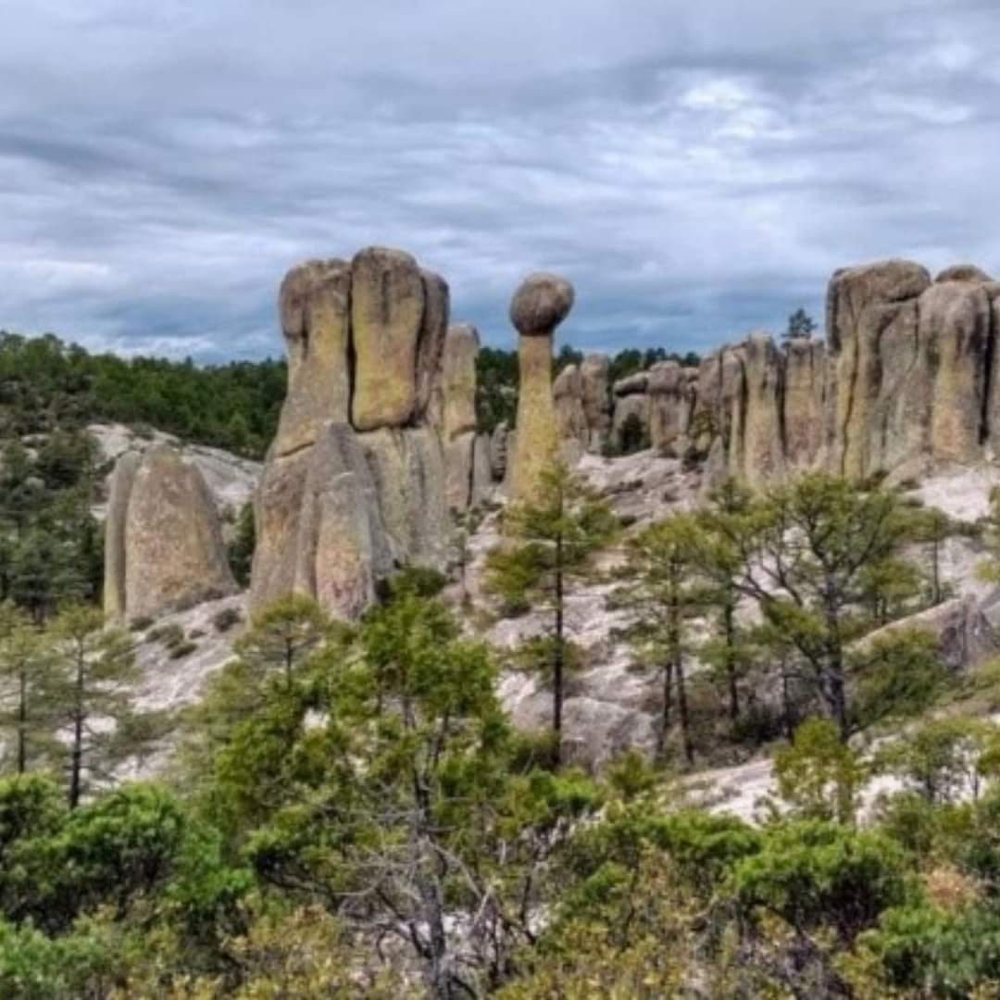
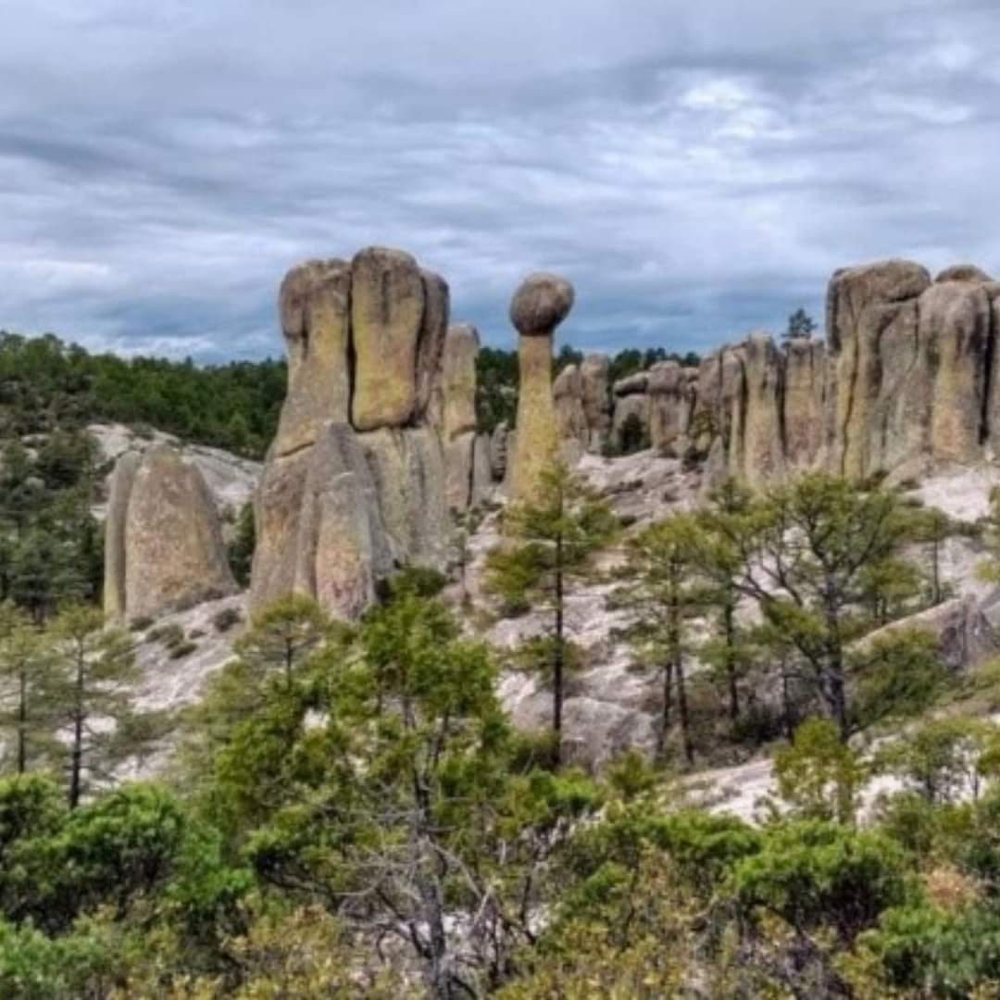

Nuestro último viaje a Chihuahua fue increíble. Cada rincón de este lugar nos dejó sin palabras, especialmente el recorrido por el Cañón del Cobre, ¡una de las maravillas naturales de México! Nos aventuramos en el famoso tren El Chepe, que atraviesa paisajes que parecen sacados de un sueño.
 

La estancia en Creel fue otra experiencia mágica; el contacto con la comunidad Rarámuri y conocer su cultura tan de cerca nos hizo valorar aún más la riqueza cultural de nuestro país. Los viajeros estuvieron encantados y aprendieron muchísimo mientras explorábamos juntos los miradores y cascadas de la región.
Finalizamos el viaje con una cena en la ciudad de Chihuahua, donde probamos platillos tradicionales, ¡y ni qué decir de los recuerdos que nos llevamos! Fue una aventura inolvidable y una oportunidad perfecta para crear lazos entre todos los participantes. Nos vemos en el próximo viaje, ¿te unes?